紫雲出山の桜は早朝鑑賞がおすすめ < 紫雲出山 / 香川県三豊市 >
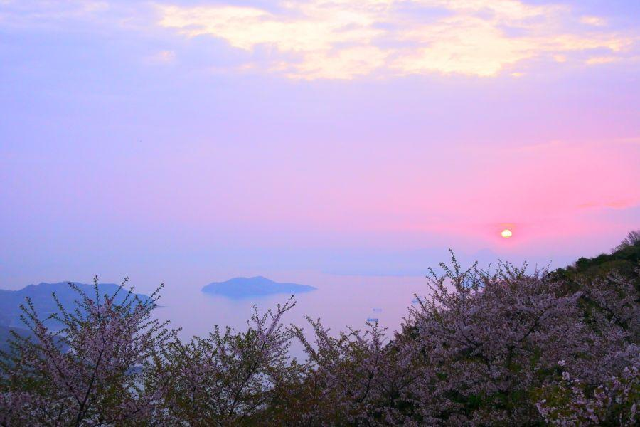
近年 絶景スポットとして取り上げられる機会が多くなり、マイカー規制など 桜を楽しむのに少しコツが必要になった紫雲出山(しうでやま)。
個人的に これまでは明け方に行き、御来光を見てから 皆さんが来られる前に下山、という楽しみ方をしておりましたが、今年はそれができるでしょうか。去年の桜を振り返ってみたいと思います。
早朝、まだ真っ暗な中を出発
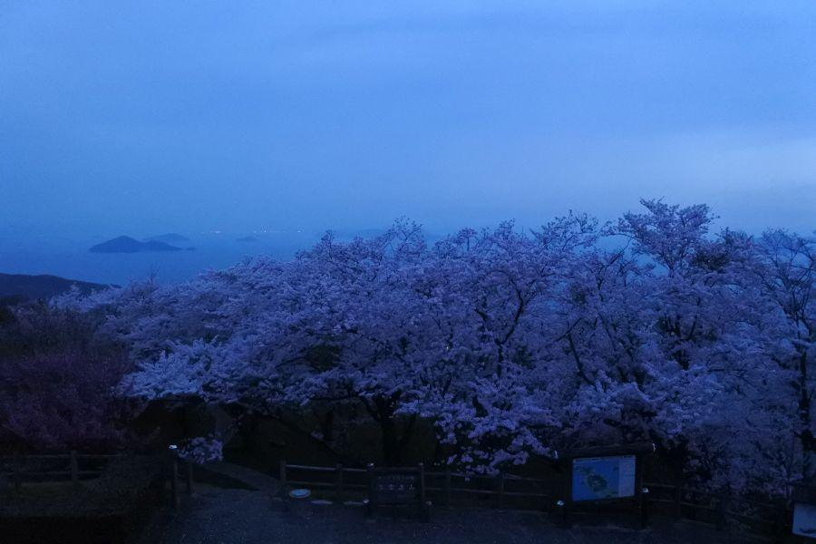
AM5:00頃
自宅がある高松を3:30頃に出て、高速道路を利用しながら 紫雲出山駐車場まで1時間と少し。この時間であれば 登山道路はマイカー規制が行われておらず、山上駐車場も余裕で駐車することができます。
到着した時点では辺りは真っ暗。駐車場からこの場所まで10分少々歩くので、懐中電灯・ヘッドランプを忘れないようにしましょう。
山上展望台に到着すると、先客がどなたかはいらっしゃると思います。そこで譲り合って日の出撮影のスタンバイをするのも良し。自分は他でお気に入りの方向があるので そこにスタンバイします。
太陽が昇り始めました
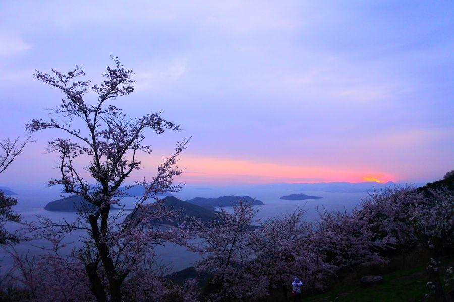
日の出時間は 3月26日(火)で6:00、一週間後の4月2日(火)で5:51 ※ 平成31年 → 高松(香川県)のこよみ
夜明けの時間になると いきなり明るくなるのではなく、徐々に東の空が白んできます。そして太陽がある場所は赤くなります。いつ太陽が現れても大丈夫なように、6時半頃にはスタンバイしておくと安心です。
4月とは言ってもまだ風は冷たい。特に この時間は、一日で最も気温が低い明け方であり、山上には風を除ける場所が無いので、防寒着は忘れないようにしましょう。
夜明け...でもこの日は曇り
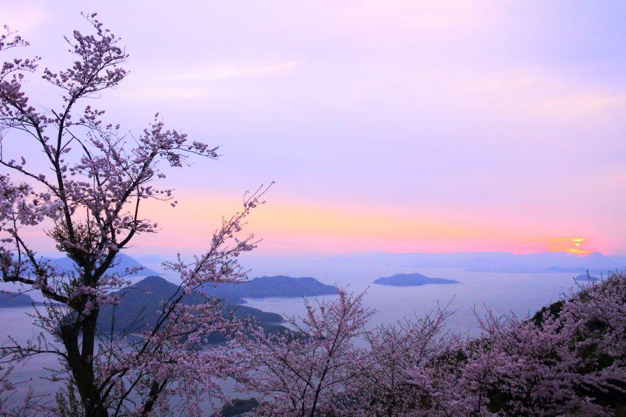
この日は残念ながら曇り。太陽が出るところを見ることはできましたが、分厚い雲が覆っており、桜の花に当たる日の出の光を見ることはできませんでした。天気予報を見て 翌朝の天気を確かめてからトライすると、成功率が上がると思います。
太陽の右側に見える三角山は "飯野山(いいのやま)"
「讃岐富士」の愛称で親しまれている、端正な山容のお山です。
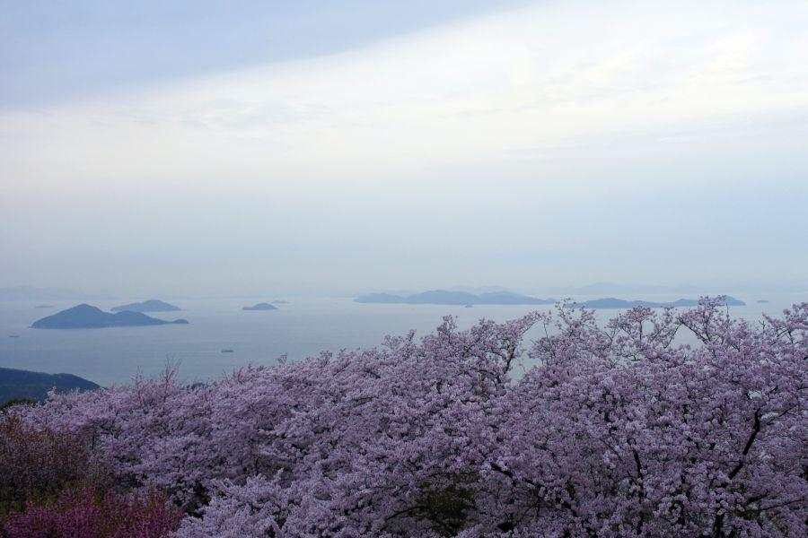
太陽が昇った後、曇りの日の桜はこんな感じ。
自分は県内ですぐ来れるから良いけれど、遠方から来られる場合は これだと少し勿体ないです。
■ 天気予報を確認
■ 宿泊して二回チャンスを作る
など
工夫しましょう。
下山リミットあり
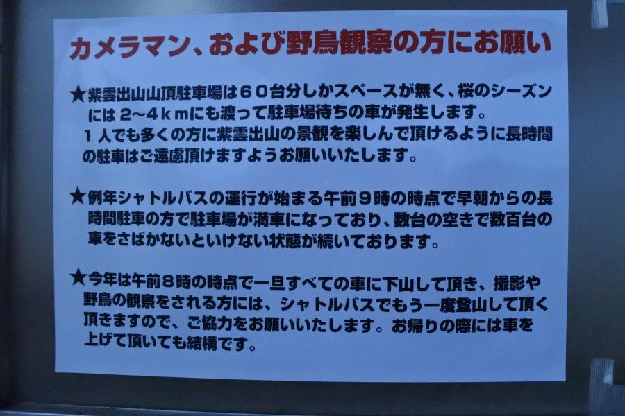
御来光を見終わったら 駐車場へ戻り、下山します。8時の時点で 山から車を退去させなければいけません。
この規制は去年(平成30年)から始まりました。
この際 歩いて山へ上がってみては
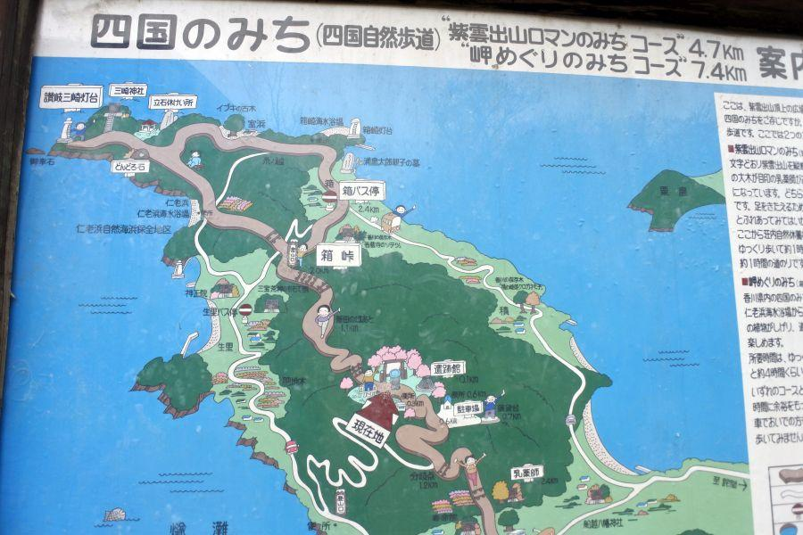
日中に時間を気にせず桜を鑑賞したいという方。歩いて紫雲出山に登るのも有効です。
>>南 荘内自然休養村センター
>>北 箱峠
どちらから登っても 1時間程度。来た道を帰るのが あまり嬉しくない場合、南から登って北へ下りて コミュニティバスで車を取りに戻る という作戦もありです。
バスの運行ダイヤは こちらをご覧ください → 三豊市コミュニティバス荘内線
※ 注意点
南北登山口両方とも、車を駐車できる台数が限られているので、ハイシーズンに登山口に駐車出来るのかわかりません
バスの運行本数が少ないので、事前に調べてから登山を始めましょう
月曜から土曜と、日曜ダイヤが異なります
夕陽撮影の際は、山中で真っ暗になるので 懐中電灯・ヘッドランプを持参するようにしてください
寄り道①、潮時が良ければ竜宮城へ
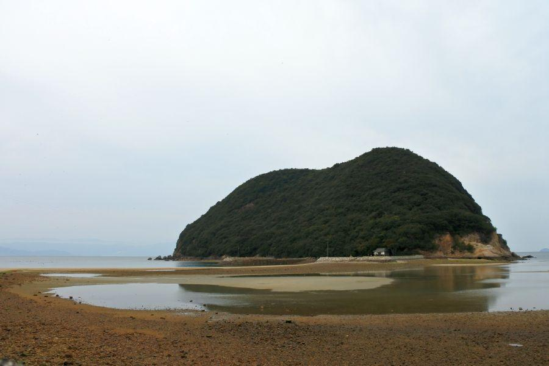
「早起きは三文の徳」
とは昔から言いますが、早朝に紫雲出山の桜を見て下山したところで、まだ8時とかそれくらい。慌てて帰っても朝のラッシュに巻き込まれるので、少し寄り道していきましょう。
こちら丸山島は、干潮時前後には 四国と島の間に陸地が出現。島へ歩いて渡ることができるようになります。予め潮時を調べておくと良いです。 →気象庁 潮位表
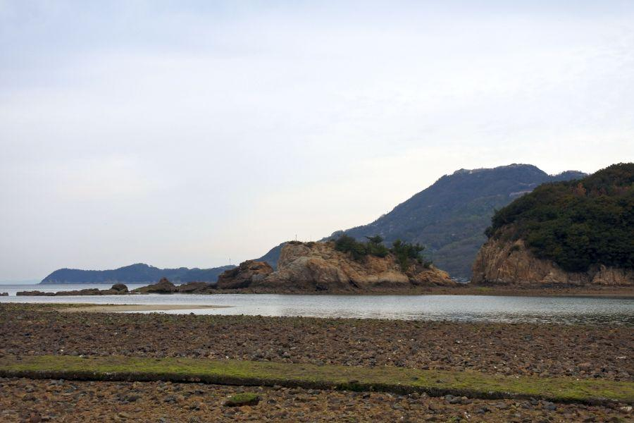
奥に見える山が紫雲出山(352m)。少しピンクがかっているところに桜の木があることがわかります。その左に伸びる陸地が荘内半島先端です。
潮が引いた時に現れるコンクリートの道が敷かれているあたり、丸山島が古くから信仰の対象になっていたことがわかります。ただ、せっかくの神聖な参道ですが、海藻が生えていて滑るので 砂利の方が安全です。
荘内半島一帯は 浦島太郎伝説が伝わる地。丸山島こそが竜宮城、との言い伝えがあり、半島各地にはそのことに由来する地名がいくつも見られます。
竜宮城から持ち帰った宝物を積み替えた場所 "積(つむ)"
長期不在を詫びるために 知人らにその宝を配ろうと七等分に分けた "七宝山(しっぽうざん)"
宝物を持って 七つの浦と島を巡ったことから "浦島(うらしま)"
既に浦島を知る者はおらず、寂しさから絶対開けてはいけないと言われていた玉手箱を開けた場所 "箱(はこ)"
玉手箱から立ち上った紫色の煙が掛かった山 "紫雲出山(しうでやま)"
・
・
・
荘内半島には 他ではあまり見ない変わった地名を見かけますが、それらは浦島伝説に因んだものが多いようです。
寄り道②、ご当地グルメ
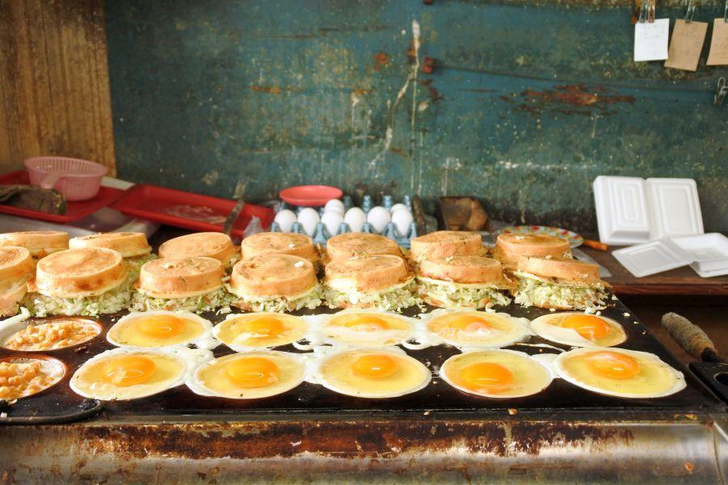
散策してお腹が減った頃に 世間ではお店が開き始めます。荘内半島を南へ下った 半島の付け根にある仁尾町のソウルフード・たこ判はいかがでしょうか。
朝から粉もん？？ とは思いますが、早起きして結構歩いているでしょうから、難なく食べれるはず。
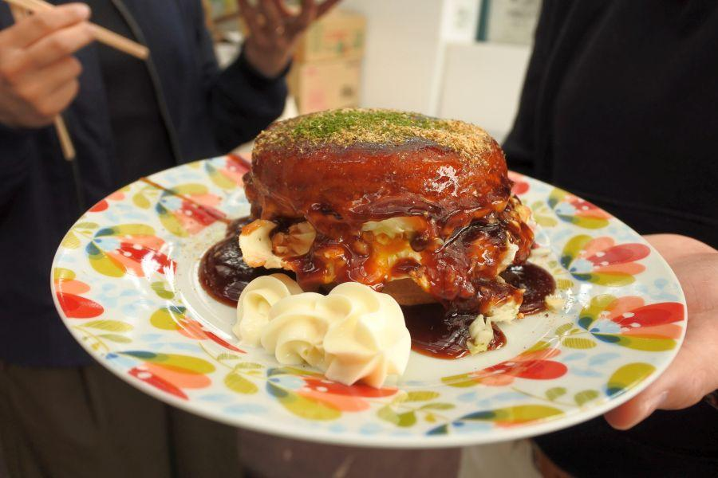
大判焼きの機械で焼いた、たこ焼きとお好み焼きのあいの子みたいな食べもの。
人気店ゆえ お昼に行くと混雑するので、早い時間に行く方が賢明です。さぬきうどんも良いですが、ここだけの味を是非ご賞味ください。
三豊市観光交流局より(転載)
＼紫雲出山 桜シーズン交通規制のお知らせ／
今年も大盛況が予想される紫雲出山の桜シーズン！年々来訪者が増加していることに伴い、2019年から紫雲出山周辺道路の交通規制を行い「マイカーは通行禁止とし、シャトルバスのみの運行」とします。
【交通規制】
期間：2019年3月30日（土）～4月7日（日）
時間：8:00～19:30
区間：大浜漁港～紫雲出山山頂
【シャトルバス情報】
期間：2019年3月30日（土）～4月7日（日）
時間：9:00～19:00
〈最終便〉大浜漁港発 17:00
山頂からの帰り 18:45
乗り場：大浜漁港（三豊市詫間町大浜甲2471）
料金：片道 200yen（小学生以下は無料）
往復 400yen
＊桜の開花状況により変動する可能性あり。
必ずお出かけ前に、三豊市観光交流局HPを確認してください。
詳しくはこちらから！
http://www.mitoyo-kanko.com/mt-shiude/
紫雲出山
< 自家用車 >
高松駅から 約1時間10分、59km
高松空港から 約1時間10分、59km
※ 主な地点からの最速・最短距離